Rotor is a TOTP authenticator — the kind that shows rotating 6‑digit codes for two‑factor login. Unlike every major authenticator app, it has no account, no cloud, no sync, no app store, and no company behind it. It is one HTML file. You open a URL, set a passphrase, scan your QR codes, and your secrets live only on the device you opened it on.
This page exists because asking strangers to trust unfamiliar software with their two‑factor codes is a big ask. So here is every step of the user flow, captured from the actual app, on desktop and mobile, plus an honest explanation of how Rotor is built and what tradeoffs you're accepting.
Pick whichever you trust most. They all do the same thing.
rotor.naklitechie.com — loads once, then a service worker caches the page so it works with the network fully disabled. After the first load you can turn off Wi‑Fi and it still works forever.
In your browser: File → Save Page As. You get
index.html on your disk. Open it any time. No
internet required, ever. Drop it in a Dropbox / iCloud folder if
you want it on multiple machines — it's a single file.
github.com/NakliTechie/rotor
— for the maximum‑paranoid: read every line, build it
yourself (there is no build), serve it from your own machine
with python3 -m http.server.
Captured directly from the running app. Switch between the desktop and mobile views below.
It explains what Rotor is, why it exists, the no‑recovery tradeoff in a yellow callout, basic usage, the keyboard shortcuts, and a one‑screen description of how it's built. You can re‑open it any time with the ? button in the top bar or the ? key.
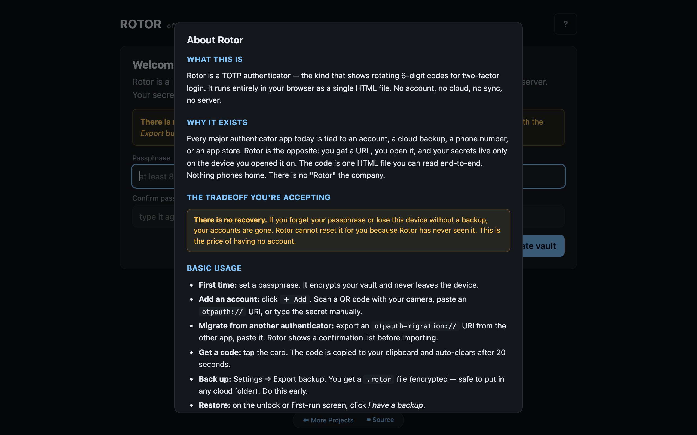
The passphrase is what encrypts your vault. It never leaves your device. Rotor cannot reset it for you because Rotor has never seen it.
If you already have a Rotor backup file from another device, click I have a backup instead.
8‑character minimum, but realistically you want a passphrase, not a password. Four random words is fine. The yellow box on this screen tells you the truth about losing it.
Rotor encrypts the vault with AES‑256‑GCM and derives the key from your passphrase via PBKDF2‑SHA256 at 600,000 iterations — the OWASP 2023 recommended level.
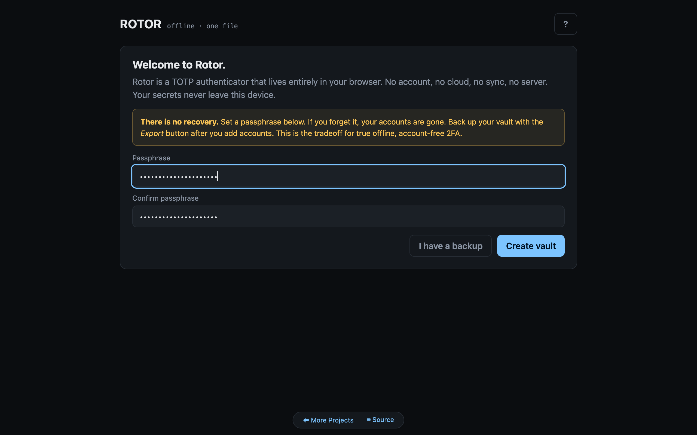
Each card shows the issuer, the account label, the current code (split for readability), and a countdown ring telling you how many seconds until rotation. A global progress bar at the top runs in lockstep.
Tap a card to copy the code. The clipboard auto‑clears after 20 seconds.
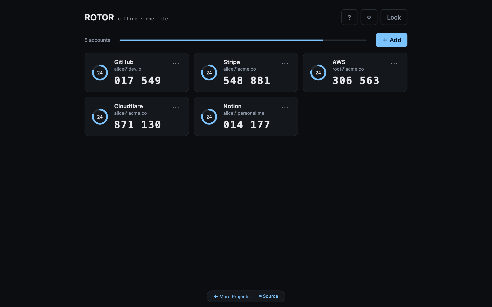
On a device with a camera, click Start camera, point at the QR code from your account's 2FA setup page, and Rotor decodes it locally. The QR decoder (jsQR) is inlined into the HTML — no CDN, no network call.
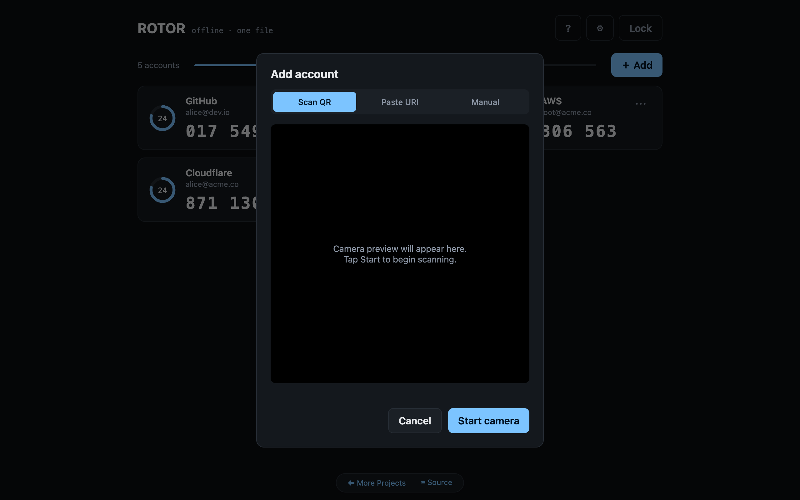
Spaces and case don't matter — the parser normalises base32. The Advanced drawer lets you change algorithm (SHA‑1 / SHA‑256), digits (6 / 8) and period (30s / 60s) for the few accounts that need it.
There's also a Paste URI tab for
otpauth:// URIs — including
otpauth‑migration:// URIs that batch‑import
multiple accounts at once from another authenticator.
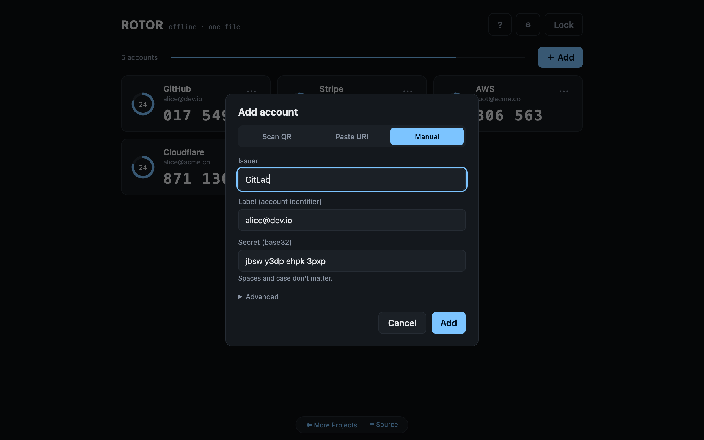
Click the … button on any card. You can change the issuer and label freely. The algorithm, digits and period are shown but not editable — they have to match what the service expects.
Delete is irreversible and warns you to disable 2FA on the account first.
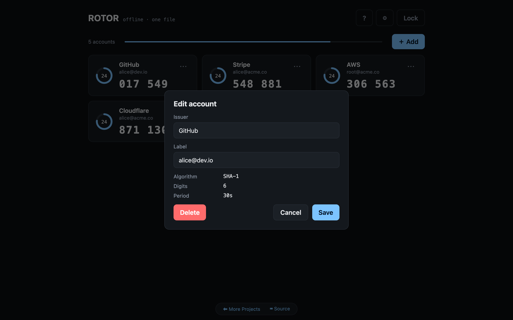
Export backup downloads a single
.rotor file. It's encrypted with the same
passphrase, so it's safe to drop in any cloud folder.
Import reads .rotor backups, plain
JSON account lists, or text files of otpauth://
URIs.
Destroy vault wipes the entire IndexedDB database and the in‑memory state. There is no undo.
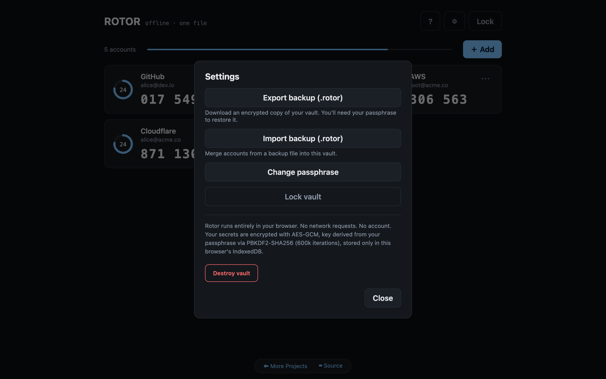
On the next visit (or after the Lock button), you see this screen. Wrong passphrases are rejected by AES‑GCM's authentication tag — there is no "close enough".
If you've lost the passphrase but have a backup, the I have a backup button lets you restore directly from here.
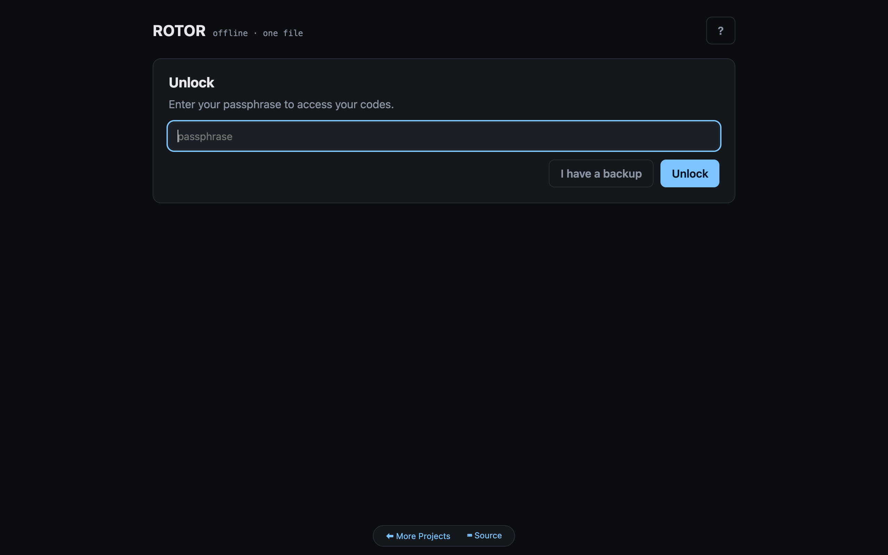
Auto‑opens once on first visit, never again unless you destroy the vault or clear browser data. Re‑openable from the ? button in the top bar.
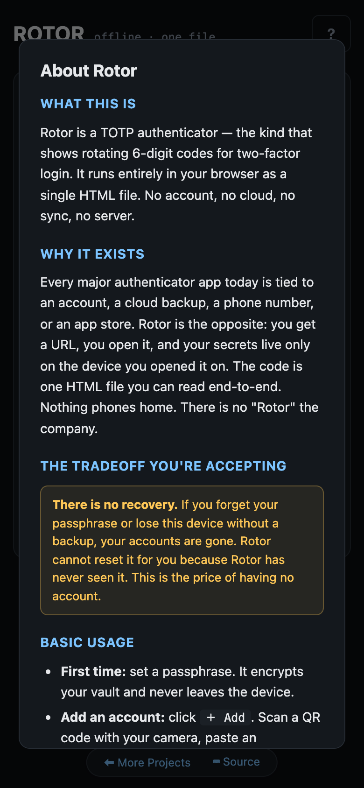
The form is sized for thumbs, the warn callout sits where you can't miss it. I have a backup is right there for users coming from another device.
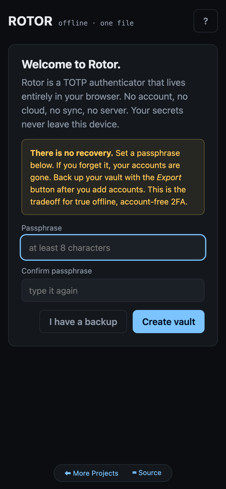
Once created, the vault lives in this browser's IndexedDB. Switching browsers or clearing site data wipes it — this is why you back up early.
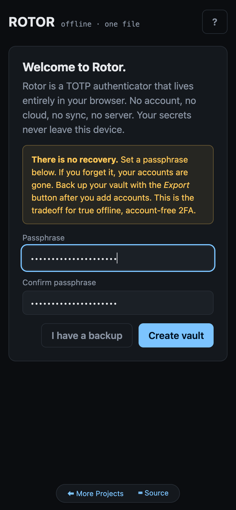
Same countdown ring, same global progress bar, same tap‑to‑copy behaviour as desktop. The mobile layout makes each code easy to read at a glance and easy to tap from any thumb position.
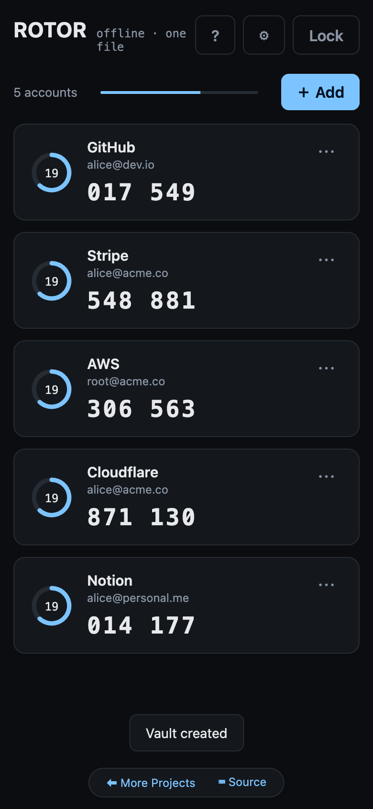
On a phone with a camera, the scan flow is the natural way to add an account. Tap Start camera, allow permission once, point at the QR code on your laptop screen.
Permission is granted to the browser tab only, and Rotor never sends the video stream anywhere — it decodes frames in JavaScript on‑device.
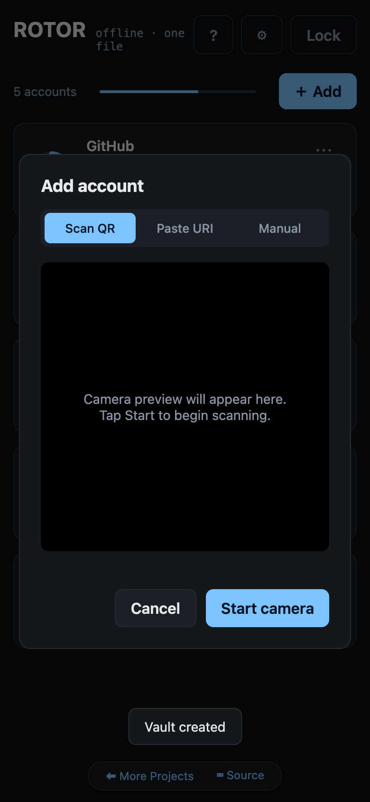
Issuer, label, secret. The Advanced drawer is collapsed by default so the common case (SHA‑1, 6 digits, 30s) is one tap.
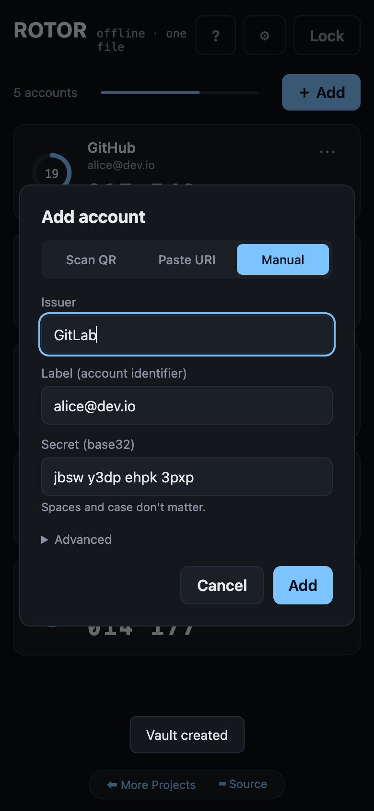
The edit sheet shows the algorithm, digits and period as read‑only metadata, with editable issuer and label fields and a clearly‑marked Delete button.
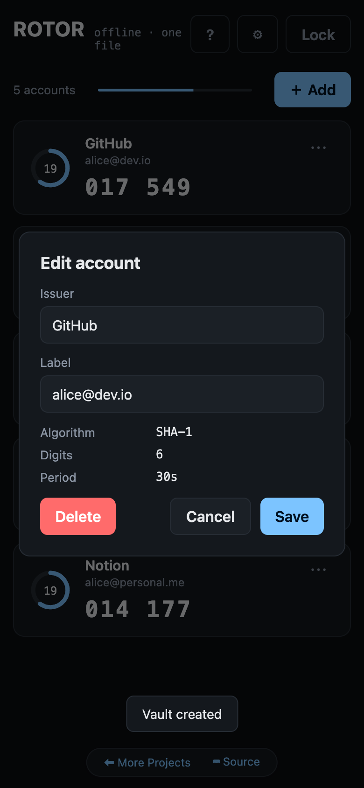
On mobile the same settings sheet appears as a column of full‑width buttons. Backup downloads to your phone's Files / Downloads, and you can airdrop / share it from there.
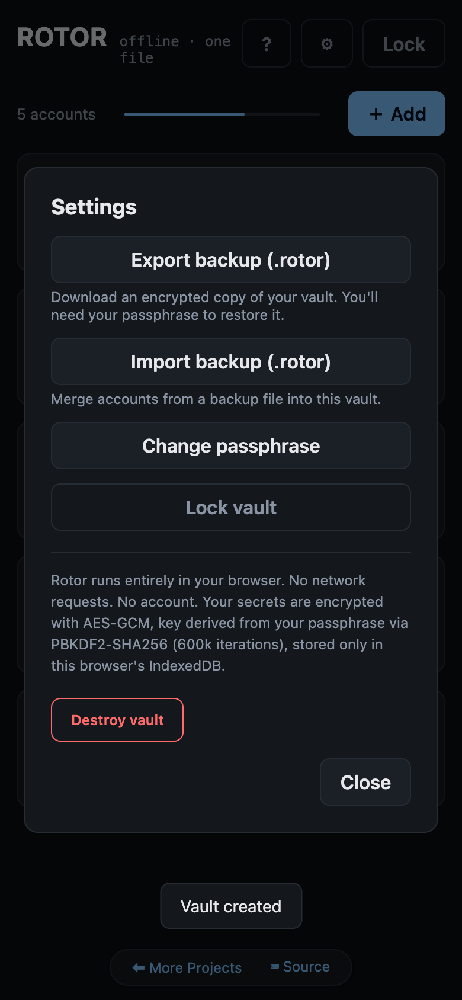
The unlock screen is the same on every device. Lose your phone? Restore from backup on a new one. Forget your passphrase? You're stuck — that's the deal.
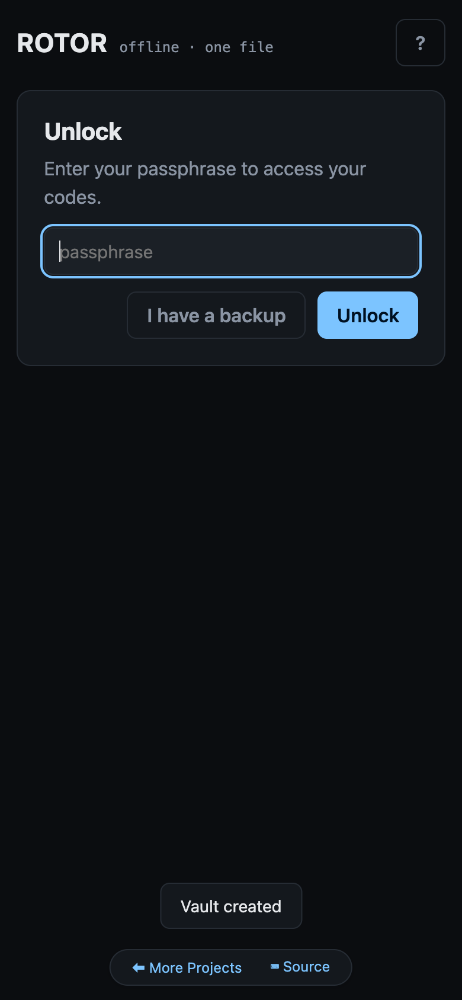
Architectural facts, not marketing claims.
The entire app is one HTML file (~200 KB). No framework, no build step, no dependency tree, no minifier. You can read every line. Most authenticator apps are hundreds of thousands of lines spread across opaque mobile binaries.
A strict Content‑Security‑Policy header sets
connect‑src 'none' — the page is
forbidden from making any network request, ever. No telemetry,
no analytics, no "phone home" can be added without
loudly breaking. The QR decoder is inlined; nothing comes from
a CDN.
AES‑256‑GCM for the vault. PBKDF2‑SHA256 at
600,000 iterations to derive the key from your passphrase
(matches OWASP 2023). 16‑byte random salt, 12‑byte
random IV per encryption. All via the browser's native
SubtleCrypto — no hand‑rolled crypto.
The .rotor backup file format is fully documented
in BACKUP-FORMAT.md.
It includes a step‑by‑step recipe to recover your
accounts from a backup using only OpenSSL on the command line.
Rotor is never the only thing standing between you and your
secrets.
The encrypted vault lives in IndexedDB, scoped to the
rotor.naklitechie.com origin. Other tabs, other
sites, browser extensions, and other apps cannot read it.
Locking wipes the passphrase, derived key and decrypted
payload from memory.
On every boot, Rotor runs the four RFC 6238 test vectors against its own TOTP implementation and logs the result to the console. If a future change ever broke the generator, you'd see it on the next page load.
Tap a code and Rotor copies it, then auto‑clears the clipboard 20 seconds later — but only if the clipboard still contains what we put there, so we never overwrite something else you copied in the meantime.
Once you unlock, the derived AES key is held as a
non‑extractable CryptoKey object —
even malicious in‑page JavaScript can use it to encrypt
but cannot read its raw bytes. It's wiped on Lock.
What you give up to get all of the above.
There is no recovery. If you forget your passphrase or lose this device without a backup, your accounts are gone. Rotor cannot reset it for you because Rotor has never seen it. This is the price of having no account.
Mitigation: back up your vault early with
Settings → Export, store the
.rotor file somewhere you trust (it's encrypted, so
any cloud folder works), and put a copy on a second device.